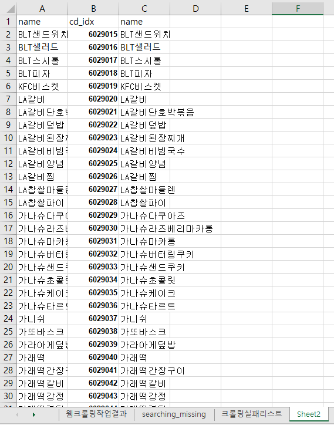
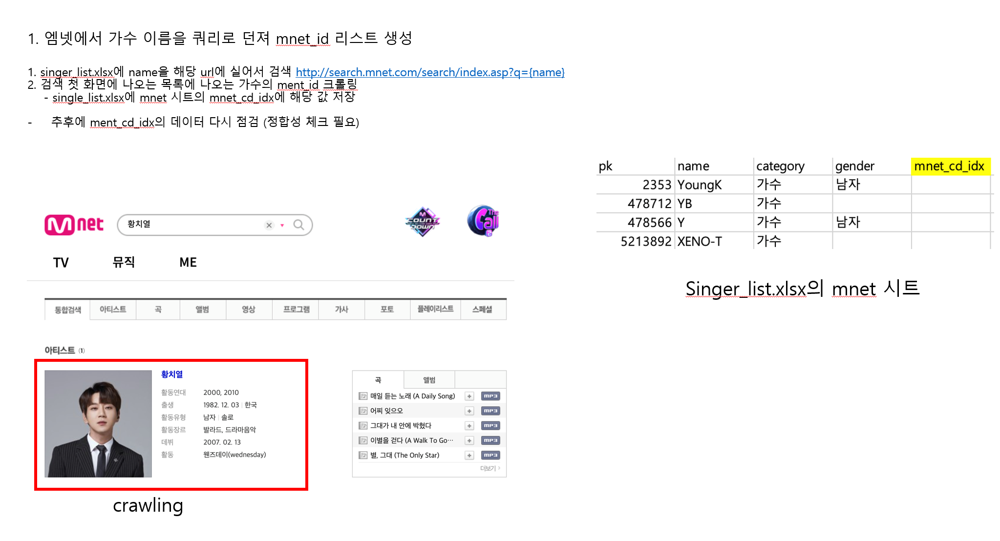
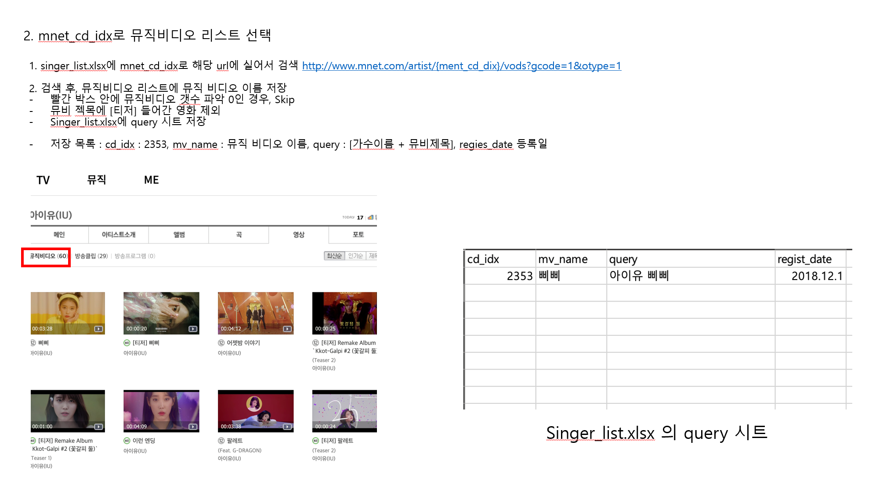
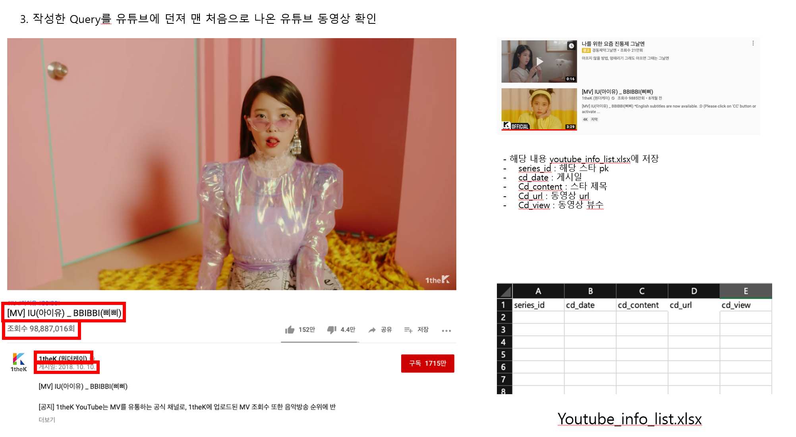

web crawling
파이썬의 BeatifulSoup4, Selenium을 사용하여 유튜브에서 정보를 수집하고, pandas 라이브러리를 사용하여 엑셀로 출력하는 코드입니다.
youtube_crawling_title.py
#-*- coding: utf-8 -*-
import requests
import pandas as pd
import openpyxl
from pandas import DataFrame
from bs4 import BeautifulSoup
from selenium import webdriver
from tqdm import tqdm
import time
import numpy as np
자세히 보기
'''
======================
총 갯수 23656
======================
**님 startPoint : 0
EndPoint : 4000
**님 startPoint : 4001
EndPoint : 8000
**님 startPoint : 8001
EndPoint : 12000
**님 startPoint : 12001
EndPoint : 16000
**님 startPoint : 16001
EndPoint : 20000
extra startPoint : 20001
EndPoint : 23656
***********************
에러 나서 멈췃을 시, 터미널 하단의
OOit << start + OO숫자 넣어서
StartPoint 변수값에 넣어서 다시 돌려주시면 되용!
'''
StartPoint = 20001 #<----여기에 숫자 넣어주시면 되용!
EndPoint = 23656 #<----여기에 숫자 넣어주시면 되용!
DriverPath = '/Users/mycelebs_dev/PycharmProjects/web_clowling/190704/chromedriver' #<----여기에 경로 넣어주심 되용!!
ResourceExcelPath = '/Users/mycelebs_dev/PycharmProjects/web_clowling/190704/coo_data_190704.xlsx' #<----여기에 경로 넣어주심 되용!!
chrome_options = webdriver.ChromeOptions()
driver = webdriver.Chrome(executable_path=DriverPath,
chrome_options=chrome_options)
df = pd.read_excel(ResourceExcelPath)
cd_idx = df['cd_name']
result_df = df.loc[:, ['cd_name']] # DataFrame(data = {"food_name" : [], "food_url" : []}) # df.loc[:, ['cd_name']]
rdf_i = 0
data_list=[]
for idx,row in tqdm(df[StartPoint:EndPoint].iterrows(),desc="돌리는중"):
cd_name=row['cd_name']
try:
youtubeUrl=(f"https://www.youtube.com/results?search_query={cd_name}+만들기+-먹방")
driver.get(youtubeUrl)
url_list = []
box_list = driver.find_elements_by_css_selector("a#video-title")
# print(box_list)
num=0
for box in box_list:
try:
url=box.get_attribute("href")
num+=1
# print(url)
except:
continue
url_list.append(url)
if(num==6):
food_make_url = "\n".join(url_list)
# print(food_make_url)
data={"cd_name":cd_name,"food_make_url":food_make_url}
data_list.append(data)
break
except:
print(idx)
result_df=pd.DataFrame(data_list,columns=['cd_name','food_make_url'])
result_df.to_excel(f'/Users/mycelebs_dev/PycharmProjects/web_clowling/190704/result_coo_data_{idx}_190704.xlsx',index=False)
driver.close()
result_df=pd.DataFrame(data_list,columns=['cd_name','food_make_url'])
result_df.to_excel('/Users/mycelebs_dev/PycharmProjects/web_clowling/190704/result_coo_data_190704.xlsx',index=False)
driver.close()
기존 애플리케이션(말해 요리)에 등록되어 있는 요리 항목 23656개 이름이 저장되어 있는 엑셀 파일을 읽어 들이고, 그 값을 youtube 검색창에 "{name} 만들기 -먹방" 으로 검색쿼리를 던졌습니다. -먹방 옵션으로 요리 제작 레시피 영상위주로 뽑았습니다. 검색 결과가 6개 미만인 영상은 퀄리티가 대게 낮아 제외시켰습니다. 검색된 영상에서 상위 6개 영상의 제목과 href(주소)를 갖고와서 xlsx파일로 내보냅니다.
youtube_crawling_detail.py
#-*- coding: utf-8 -*-
import requests
import pandas as pd
import openpyxl
from pandas import DataFrame
from bs4 import BeautifulSoup
from selenium import webdriver
from webdriver_manager.chrome import ChromeDriverManager
from tqdm import tqdm
import time
import numpy as np
import ast
import traceback
자세히 보기
'''
======================
총 갯수 23656
======================
**님 startPoint : 0
EndPoint : 4000
**님 startPoint : 4001
EndPoint : 8000
**님 startPoint : 8001
EndPoint : 12000
***********************
에러 나서 멈췃을 시, 터미널 하단의
OOit <- start + OO숫자 넣어서
StartPoint 변수값에 넣어서 다시 돌려주시면 되용!
정말 캄삼다!
'''
StratPoint = 4000 #<----여기에 숫자 넣어주시면 되용!
EndPoint = 8000
options = webdriver.ChromeOptions()
options.add_argument('headless')
options.add_argument('window-size=1920x1080')
options.add_argument("disable-gpu")
options.add_argument("user-agent=Mozilla/5.0 (Macintosh; Intel Mac OS X 10_12_6) AppleWebKit/537.36 (KHTML, like Gecko) Chrome/61.0.3163.100 Safari/537.36")
options.add_argument("lang=ko_KR")
driver = webdriver.Chrome(ChromeDriverManager().install(),
chrome_options=options)
df = pd.read_excel("/Users/mycelebs_dev/PycharmProjects/web_clowling/YouTube/190722/test_result_coo_data.xlsx")
cd_idx = df['cd_name']
result_df = df.loc[:, ['cd_name']]
rdf_i = 0
data_list=[]
for idx,row in tqdm(df[StratPoint:EndPoint].iterrows(),desc="돌리는중"):
cd_name=row['cd_name']
print(cd_name)
try:
if row['food_make_url'] == '2':
data={"cd_name":cd_name, "title_name":2 , "food_make_url":2, "view": 2, "img_src": 2, "uploader":2}
data_list.append(data)
else:
youtubeUrl=(f"https://www.youtube.com/results?search_query={cd_name}+만들기+-먹방")
print(youtubeUrl)
driver.get(youtubeUrl)
url_list = []
view_list = []
img_src_list = []
uploader_list = []
title_name_list = []
num = 0
box_list = driver.find_elements_by_css_selector("#contents > ytd-video-renderer")
if len(box_list) <= 6:
data={"cd_name":cd_name, "title_name":2 , "food_make_url":2, "view": 2, "img_src": 2, "uploader":2}
data_list.append(data)
else:
for box in box_list:
try:
title = box.find_element_by_css_selector('#video-title')
uploader_box = box.find_element_by_css_selector('#byline > a').text
img_ = box.find_element_by_css_selector('#img')
view_box = box.find_element_by_css_selector('#metadata-line > span:nth-child(1)').text
title_name = title.text
url=title.get_attribute("href")
img = img_.get_attribute('src')
num+=1
except:
traceback.print_exc()
data={"cd_name":cd_name, "title_name":title_name , "food_make_url":url, "view": view_box, "img_src": img, "uploader":uploader_box}
data_list.append(data)
if(num==6):
break
except:
print(idx)
result_df=pd.DataFrame(data_list,columns=['cd_name','title_name','food_make_url','view','uploader','img_src'])
result_df.to_excel(f'/Users/mycelebs_dev/PycharmProjects/web_clowling/YouTube/190722/result_coo_data_190722.xlsx',index=False)
# driver.close()
result_df=pd.DataFrame(data_list,columns=['cd_name','title_name','food_make_url','view','uploader','img_src'])
result_df.to_excel('/Users/mycelebs_dev/PycharmProjects/web_clowling/YouTube/190722/result_coo_data_190722.xlsx',index=False)
driver.close()
youtube_creawling_title.py코드에서 나온 엑셀을 다시 읽어들여, 긁어온 href 태그의 링크로 이동합니다. 그리고 필요한 정보 5가지(영상 제목 / 주소 / 조회수 / 업로더 / 썸네일 이미지 주소)를 갖고와 xlsx파일로 내보냅니다. 크롤링에 실패한 항목은 숫자 '2'로 채워넣어 엑셀에서 필터기능을 이용해 따로 관리가 가능합니다.
엠넷 유튜브 크롤링
  기존 쇼룸 애플리케이션에 등록되어있는 가수들의 리스트를 엑셀파일로부터 읽어들여, 해당 가수들의 뮤직비디오 정보를 유튜브에서 수집하는 코드입니다. 코드는 총 3단계로 나뉘어 집니다. 1. 엠넷에 가수이름을 쿼리로 검색하여 가수의 'mnet_id' 리스트 작성. 2. 작성된 리스트의 'mnet_id'를 이용하여 엠넷에 업로드 되어있는 뮤직비디오 정보 수집. 3. 뮤직비디오 정보를 유튜브에 검색하여 영상들의 정보 수집. 아래는 위의 단계별로 작성된 코드입니다.
step1.py
#-*- coding: utf-8 -*-
import json
import requests
import pandas as pd
import openpyxl
from pandas import DataFrame
from bs4 import BeautifulSoup as bs
from selenium import webdriver
from tqdm import tqdm
import time
import numpy as np
from urllib.request import urlopen, Request
import pprint
자세히 보기
StratPoint = 0 #<----여기에 숫자 넣어주시면 되용!
EndPoint = 2956
s = requests.Session()
df = pd.read_excel("/Users/mycelebs_dev/PycharmProjects/web_clowling/190709/singer_list.xlsx")
result_df = df.loc[:, ['name']]
pk = df['pk']
rdf_i = 0
try :
data_list=[]
fail_data_list=[]
with tqdm(total=EndPoint - StratPoint) as pbar:
for idx,row in tqdm(df[StratPoint:EndPoint].iterrows(),desc="rolling in the deep"):
cd_name=row['name']
pk = row['pk']
try:
req2 = s.get(f"http://search.api.mnet.com/search/totalweb?q={cd_name}&sort=r&callback=angular.callbacks._0")
html2 = req2.text
html2 = html2[21:]
html2 = html2[:-1]
#artistid 따오는것
dict_html2 = json.loads(html2)
try :
artist_id = int(dict_html2['data']['artistlist'][0]['artistid'])
data={"cd_name":cd_name,"artist_id":artist_id, "pk":pk}
data_list.append(data)
pbar.update()
except :
data={"cd_name":cd_name,"artist_id":"2", "pk":pk}
data_list.append(data)
fail_data_list.append(data)
pbar.update()
except:
result_df=pd.DataFrame(data_list,columns=['cd_name','artist_id','pk'])
result_df.to_excel(f'/Users/mycelebs_dev/PycharmProjects/web_clowling/190709/333_result_mnet_star_id_190709.xlsx',index=False)
# driver.close()
result_df=pd.DataFrame(fail_data_list,columns=['cd_name','artist_id','pk'])
result_df.to_excel(f'/Users/mycelebs_dev/PycharmProjects/web_clowling/190709/333_fail_result_mnet_star_id_190709.xlsx',index=False)
except:
result_df=pd.DataFrame(data_list,columns=['cd_name','artist_id','pk'])
result_df.to_excel(f'/Users/mycelebs_dev/PycharmProjects/web_clowling/190709/333_result_mnet_star_id_190709.xlsx',index=False)
# driver.close()
result_df=pd.DataFrame(fail_data_list,columns=['cd_name','artist_id','pk'])
result_df.to_excel(f'/Users/mycelebs_dev/PycharmProjects/web_clowling/190709/333_fail_result_mnet_star_id_190709.xlsx',index=False)
result_df=pd.DataFrame(data_list,columns=['cd_name','artist_id','pk'])
result_df.to_excel(f'/Users/mycelebs_dev/PycharmProjects/web_clowling/190709/333_result_mnet_star_id_190709.xlsx',index=False)
# driver.close()
result_df=pd.DataFrame(fail_data_list,columns=['cd_name','artist_id','pk'])
result_df.to_excel(f'/Users/mycelebs_dev/PycharmProjects/web_clowling/190709/333_fail_result_mnet_star_id_190709.xlsx',index=False)
step2.py
#-*- coding: utf-8 -*-
import requests
import pandas as pd
import openpyxl
from pandas import DataFrame
from bs4 import BeautifulSoup as bs
from selenium import webdriver
from tqdm import tqdm
import time
from termcolor import cprint, colored
import numpy as np
import ast
import re
from webdriver_manager.chrome import ChromeDriverManager
from termcolor import cprint, colored
자세히 보기
'''
======================
총 갯수 23656
======================
**님 startPoint : 0
EndPoint : 4000
**님 startPoint : 4001
EndPoint : 8000
**님 startPoint : 8001
EndPoint : 12000
***********************
에러 나서 멈췃을 시, 터미널 하단의
OOit << start + OO숫자 넣어서
StartPoint 변수값에 넣어서 다시 돌려주시면 되용!
정말 캄삼다!
'''
StratPoint = 2955 #<----여기에 숫자 넣어주시면 되용!
EndPoint = 2957
fail_list = []
Success_list = []
title_list = []
Success_list = []
# chrome_options.add_argument('--headless')
options = webdriver.ChromeOptions()
options.add_argument('headless')
options.add_argument('window-size=1920x1080')
options.add_argument("disable-gpu")
options.add_argument("user-agent=Mozilla/5.0 (Macintosh; Intel Mac OS X 10_12_6) AppleWebKit/537.36 (KHTML, like Gecko) Chrome/61.0.3163.100 Safari/537.36")
options.add_argument("lang=ko_KR")
driver = webdriver.Chrome(ChromeDriverManager().install(),
chrome_options=options)
def rtYTURL(watch, pk):
URL = 'https://www.youtube.com'
return SecondCraw(URL + watch, pk)
def SecondCraw(URL, pk):
CONTENT = []
driver.get(URL)
html = driver.page_source
s = bs(html, 'html.parser')
#mv_title
SectorA = s.select('#container > h1 > yt-formatted-string')
#mv_view
SectorB = driver.find_elements_by_css_selector('#count > yt-view-count-renderer > span.view-count.style-scope.yt-view-count-renderer')
#mv_register
# SectorC = driver.find_elements_by_css_selector('#owner-name > a')
#mv_regist_date
SectorD = driver.find_elements_by_css_selector('#upload-info > span')
#현재 pk는 singer_list의 pk가 아닌 mnet의 pk
data={"series_id":pk,"cd_date":SectorD, 'Cd_content': SectorA, 'cd_url':URL, 'cd_view':SectorB}
CONTENT.append(data)
return CONTENT
def Searching(mnet_cd_idx ,page_num):
# print(mnet_cd_idx)
if (mnet_cd_idx == 2) :
data = {'cd_idx':mnet_cd_idx,'mv_name':'2', 'query':name + ' ' + '2', 'regist_date': '2', 'pk':pk}
title_list.append(data)
fail_list.append(data)
for page in range(int(page_num)):
try :
driver.get(f'http://www.mnet.com/artist/{mnet_cd_idx}/vods?gcode=1&otype={page}')
soup = bs(driver.page_source, 'html.parser')
# titles = soup.select('#content > div.link_movie.border_0.mb0 > div > ul > li > dl > dt > a')
regist = soup.select('#content > div.link_movie.border_0.mb0 > div > ul > li > dl')
if (regist==[] ) :
data = {'cd_idx':mnet_cd_idx,'mv_name':'null', 'query':name, 'regist_date':'null', 'pk':pk}
title_list.append(data)
fail_list.append(data)
continue
for titles in regist:
try :
# 각각의 영상 타이틀 제목의 tag 제거
tag_title_name = titles.select('dt > a')
title_name = tag_title_name[0].text
# 각각의 영상 등록일
date=re.findall("[0-9]{4}.[0-9]{2}.[0-9]{2}",str(titles))
if '티저' in title_name :
continue
else :
data = {'cd_idx':mnet_cd_idx,'mv_name':title_name, 'query':name + ' ' + title_name, 'regist_date': date, 'pk':pk}
title_list.append(data)
Success_list.append(data)
except :
data = {'cd_idx':mnet_cd_idx,'mv_name':title_name, 'query':name + ' ' + title_name, 'regist_date': date, 'pk':pk}
fail_list_title.append(data)
continue
except :
data = {'cd_idx':mnet_cd_idx, 'name':name}
fail_list.append(data)
continue
def Is_it_be(mnet_cd_idx):
try :
driver.get(f'http://www.mnet.com/artist/{mnet_cd_idx}/vods?gcode=1')
soup = bs(driver.page_source, 'html.parser', from_encoding='utf-8')
page_num = soup.select_one('#content > div.paging_type_no > a:last-child').get_text()
return(page_num)
except :
page_num = 1
return(page_num)
def save_fail_list(fail_list, fail_title_list):
result_df=pd.DataFrame(fail_list,columns=['cd_idx','name'])
result_df=pd.DataFrame(fail_list_title,columns=['cd_idx','mv_name', 'query', 'regist_date', 'pk'])
result_df.to_excel(f'/Users/mycelebs_dev/PycharmProjects/web_clowling/190712/fail_star_result_mnet_star_id_190709.xlsx',index=False)
result_df.to_excel(f'/Users/mycelebs_dev/PycharmProjects/web_clowling/190712/fail_list_result_mnet_star_id_190709.xlsx',index=False)
def Save_Excel(list1, list2, list3):
list1_df=pd.DataFrame(list1,columns=['cd_idx','mv_name', 'query', 'regist_date', 'pk'])
list2_df=pd.DataFrame(list2,columns=['cd_idx','mv_name', 'query', 'regist_date', 'pk'])
list3_df=pd.DataFrame(list3,columns=['cd_idx','mv_name', 'query', 'regist_date', 'pk'])
list1_df.to_excel(f'/Users/mycelebs_dev/PycharmProjects/web_clowling/190712/Success_result_mnet_star_id_190709.xlsx',index=False)
list2_df.to_excel(f'/Users/mycelebs_dev/PycharmProjects/web_clowling/190712/title_result_mnet_star_id_190709.xlsx',index=False)
list3_df.to_excel(f'/Users/mycelebs_dev/PycharmProjects/web_clowling/190712/fail_result_mnet_star_id_190709.xlsx',index=False)
if __name__ == '__main__':
# CONTENTS = list(zip(df['series_id'].values.tolist(), df['cd_date'].values.tolist(), df['cd_content'].values.tolist(), df['cd_url'].values.tolist(), df['cd_view'].values.tolist()))
df = pd.read_excel("~/Desktop/mycelebs/WebCrawling/190712/singer_list.xlsx")
name = df['name']
pk = df['pk']
mnet_cd_idx = df['mnet_cd_idx']
with tqdm(total=(EndPoint-StratPoint)) as pbar:
for idx,row in tqdm(df[StratPoint:EndPoint].iterrows(), ascii=True, desc="rolling in the deep"):
name = row['name']
pk = row['pk']
mnet_cd_idx = row['mnet_cd_idx']
if mnet_cd_idx == 2:
# print('없는 아티스트 :' + name)
Searching(mnet_cd_idx, str(paged))
continue
else :
paged = Is_it_be(mnet_cd_idx)
# print('아티스트 : ' + name +':'+ str(paged))
Searching(mnet_cd_idx, str(paged))
pbar.update()
Save_Excel(Success_list, title_list, fail_list)
cprint('\n Complete Success \n', 'red')
step3.py
#-*- coding: utf-8 -*-
from youtube_dl import YoutubeDL
import requests
import pandas as pd
from pandas import DataFrame
from bs4 import BeautifulSoup as bs
from selenium import webdriver
import openpyxl
from tqdm import tqdm; tqdm.pandas(desc="working")
import time
import numpy as np
import ast
import re
from webdriver_manager.chrome import ChromeDriverManager
from termcolor import cprint, colored
자세히 보기
'''
======================
총 갯수 23656
======================
**님 startPoint : 0
EndPoint : 4000
**님 startPoint : 4001
EndPoint : 8000
**님 startPoint : 8001
EndPoint : 12000
***********************
에러 나서 멈췃을 시, 터미널 하단의
OOit << start + OO숫자 넣어서
StartPoint 변수값에 넣어서 다시 돌려주시면 되용!
정말 캄삼다!
'''
StratPoint = 49 #<----여기에 숫자 넣어주시면 되용!
EndPoint = 149
fail_list = []
fail_list_title = []
title_list = []
Success_list = []
# chrome_options.add_argument('--headless')
options = webdriver.ChromeOptions()
# options.add_argument('headless')
options.add_argument('window-size=1920x1080')
options.add_argument("disable-gpu")
options.add_argument("user-agent=Mozilla/5.0 (Macintosh; Intel Mac OS X 10_12_6) AppleWebKit/537.36 (KHTML, like Gecko) Chrome/61.0.3163.100 Safari/537.36")
options.add_argument("lang=ko_KR")
driver = webdriver.Chrome(ChromeDriverManager().install(),
chrome_options=options)
# def rtYTURL(watch, pk):
# URL = 'https://www.youtube.com'
# return str(URL + watch)
def SecondCraw(URL, pk):
driver.get(URL)
# html = driver.page_source
# s = bs(html, 'html.parser')
#mv_title
try:
time.sleep(1)
SectorA = driver.find_elements_by_xpath('//*[@id="container"]/h1/yt-formatted-string')[0].text
except:
SectorA=np.nan
#mv_view
try:
SectorB = driver.find_elements_by_xpath('//*[@id="count"]/yt-view-count-renderer/span[1]')[0].text
except:
SectorB=np.nan
#mv_register
try:
SectorC = driver.find_elements_by_xpath('//*[@id="owner-name"]/a')[0].text
except:
SectorC=np.nan
#mv_regist_date
try:
SectorD = driver.find_elements_by_xpath('//*[@id="upload-info"]/span')[0].text
except:
SectorD=np.nan
#inspecting
# print(SectorA + '\n SectorA \n' + SectorB + '\n SectorB \n' + SectorC + '\n SectorC \n' + SectorD + '\n SectorD \n ')[0].text
#현재 pk는 singer_list의 pk가 아닌 mnet의 pk
data={"series_id":pk,"cd_date":SectorD, 'cd_content': SectorA, 'cd_url':URL, 'cd_channel':SectorC, 'cd_view':SectorB}
title_list.append(data)
Success_list.append(data)
def Searching(query):
query2 = []
query2 = query.split(' ')
name = query2[0]
query2.pop(0)
song = ' '.join(query2)
driver.get(f"https://www.youtube.com/results?search_query={name}+\"{song}\"+ \"MV\"")
Vdeo = driver.find_element_by_css_selector("a#video-title")
Vdeo_url = Vdeo.get_attribute("href")
return Vdeo_url
def Save_Excel(Success_list, title_list, fail_list):
result_df_Success=pd.DataFrame(Success_list,columns=['series_id','cd_date', 'cd_content', 'cd_url', 'cd_channel', 'cd_view'])
result_df_All=pd.DataFrame(title_list,columns=['series_id','cd_date', 'cd_content', 'cd_url', 'cd_channel', 'cd_view'])
result_df_Fail=pd.DataFrame(fail_list,columns=['series_id','cd_date', 'cd_content', 'cd_url', 'cd_channel', 'cd_view'])
result_df_Success.to_excel(f'/Users/mycelebs_dev/pycharmprojects/web_clowling/190712/Success_result_YT_Mnet_999.xlsx',index=False)
result_df_All.to_excel(f'/Users/mycelebs_dev/pycharmprojects/web_clowling/190712/result_YT_Mnet_999.xlsx',index=False)
result_df_Fail.to_excel(f'/Users/mycelebs_dev/pycharmprojects/web_clowling/190712/fail_result_YT_Mnet_999.xlsx',index=False)
# def get_cations_URL(row):
# URL = Searching(row['query'])
# ydl_opts = {
# 'skip_download': True,
# 'nocheckcertificate': True,
# 'ignoreerrors': True,
# 'no_warnings': True,
# 'quiet': True,
# 'writesubtitles': True,
# 'writeautomaticsub': True
# }
# #"series_id":pk,"cd_date":SectorD, 'cd_content': SectorA, 'cd_url':URL, 'cd_channel':SectorC, 'cd_view':SectorB
# cols = ['upload_date', 'title', 'uploader', 'view_count']
# ydl = YoutubeDL(ydl_opts)
# res = ydl.extract_info(URL, download=False)
# row['cd_date'] = res['upload_date']
# row['cd_content'] = res['title']
# row['cd_channel'] = res['uploader']
# row['cd_view'] = res['view_count']
# row['cd_url'] = URL
# row['series_id'] = row['pk']
# return row
# def sav_ex(RESULT_LIST):
# result_df=pd.DataFrame(RESULT_LIST,columns=['series_id','cd_date', 'cd_content', 'cd_url', 'cd_channel', 'cd_view'])
# result_df.to_excel(f'/Users/mycelebs_dev/pycharmprojects/web_clowling/190712/Success_result_YT_Mnet_190714.xlsx',index=False)
if __name__ == '__main__':
df = pd.read_excel("/Users/mycelebs_dev/PycharmProjects/web_clowling/190712/title_result_mnet_star_id_190709.xlsx")
query = df['query']
pk = df['pk']
with tqdm(total=(EndPoint-StratPoint)) as pbar:
for idx,row in tqdm(df[StratPoint:EndPoint].iterrows(), ascii=True, desc="Rolling in the deep - Vazquez Sounds"):
pk = row['pk']
query = row['query']
mv_name = row['mv_name']
if mv_name == '2':
# print('없는 아티스트 :' + name)
data = {"series_id":pk,"cd_date":' ', 'cd_content': ' ', 'cd_url':' ' , 'cd_channel':' ', 'cd_view':' '}
title_list.append(data)
fail_list.append(data)
continue
else :
# print('아티스트 : ' + name +':'+ str(paged))
Vdeo_url = Searching(query)
Complete_url = rtYTURL(Vdeo_url)
SecondCraw(Vdeo_url, pk)
# get_cations_URL(Vdeo_url, pk)
pbar.update()
Save_Excel(Success_list, title_list, fail_list)
# sav_ex(RESULT_LIST)
cprint('\n Complete Success \n', 'red')
엠넷 서버 특성상 Selenium을 이용하여 크롤링하였으며, time.sleep(1)을 넣어주었습니다.